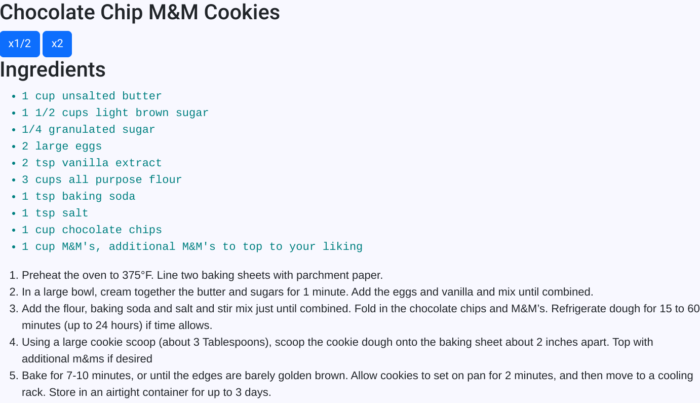

The purpose of my project was to learn a javascript tool and combine it with what I've already learnt to make anything. I chose to make my around my passion for baking. I designed a website that I could hardcode my recipes into, meaning they were in the code and won't dissapear. With the javascript knowledge I've learnt this year in class and what I've learnt on my own with my tool, math.js, I created a website that has my recipes as well as buttons to double a recipe for more cookies or cut it in half for less cookies. My tool allowed for me to ensure that all measurements were written as fractions since baking with decimals can often lead to issues.
My biggest challenge with creating this was ensureing that no information was lost when the buttons were pressed. Origionally for example, if you pressed the times 2 button you would go from "1 cup unsalted butter" to "2". It would lose the unit of measurement and the ingredient name. This challenge led to my biggest takeaway. That being that just because no one else is using your tool, doesn't mean that there is no help out there for you. Google can be helpful as long as your not just copying it and you actually understand the functionality of the code your using.
Below is an image of how a recipe is displayed on the site
